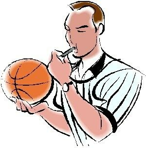

Les regles du Jeux:
1- Combien de temps dure un match ? La partie se compose de 4 périodes de 10 minutes séparées par un intervalle de 2 minutes sauf entre la 2e et 3e période où l’intervalle est de 15 minutes (mi-temps). En cas d'égalité, une seule prolongation est jouée, puis d'autres si nécessaire jusqu'à ce qu'une équipe gagne la rencontre. Les prolongations sont de 5 minutes. 2- Comment débute-t-on une rencontre ? Chaque équipe doit présenter sur le terrain 5 joueurs en tenue, prêts à jouer, pour que le jeu puisse commencer. Chaque rencontre débute par un entre-deux. 3- Comment marquer des points ? Un tir réussi en cours de jeu compte 2 points à l’intérieur de la zone des 6,25 m (ou 6,75 m selon le niveau de pratique) et 3 points à l’extérieur de cette zone. Un tir de lancer-franc compte 1 point. 4- Comment évoluer avec le ballon ? Le ballon est joué avec les mains dans les limites du terrain, le jouer délibérément avec le pied ou le poing est une violation. La balle est alors rendue à l'équipe adverse. Pour se déplacer avec le ballon, il faut dribbler. C'est à dire faire rebondir le ballon au sol avec une seule main. Il est interdit de recommencer à dribbler après s'être arrêté ou l'avoir touché des deux mains et de faire plus de deux pas sans le faire rebondir. 5- Combien de temps peut-on rester dans la raquette ? Un joueur dont l’équipe est en possession du ballon ne peut s’immobiliser plus de 3 secondes dans la raquette. La raquette est la zone restrictive située entre la ligne des lancer-francs et le panier. 6- Combien de temps dispose une équipe pour tirer au panier ? Quand une équipe prend le contrôle du ballon sur le terrain, un tir au panier doit être tenté dans un délai de 24 secondes. Le ballon doit toucher le cercle pour bénéficier d’une nouvelle période de 24 secondes. 7- Qu’est-ce qu’une faute personnelle ? Une faute personnelle est une infraction qu’un joueur commet quand il provoque un contact illégal avec un adversaire. Un joueur ne doit pas bloquer, tenir, pousser, charger, accrocher un adversaire. Gêner sa progression autrement qu’avec son torse ou avancer au contact de l’adversaire est une faute. Il est interdit d’utiliser le contact avec ses bras, ses épaules, ses hanches, ses genoux ou des moyens brutaux pour gêner l’adversaire. Si le contact est sanctionné par l’arbitre, le joueur victime de la faute bénéficie alors d’une réparation selon les cas suivants : - Si le joueur ne tirait pas : remise en jeu derrière la ligne de touche la plus proche. - Si le joueur tirait et qu’il a raté le panier : 2 ou 3 lancer- francs selon la valeur du tir tenté - Si le joueur tirait et qu’il a réussi le panier : panier accordé et un lancer-franc supplémentaire Ces quelques règles vous permettront de découvrir la pratique du basket, si vous souhaitez approfondir vos connaissances la Commission Fédérale des Officiels met à votre disposition le règlement de jeu officiel de Basket-Ball. Pour plus d’informations sur les formations destinées aux officiels, contactez votre Comité Départemental ou votre Ligue Régionale. Les compétitions sont régies par l’ensemble des règlements officiels édités par la FFBB et publiés chaque année dans son annuaire officiel.
